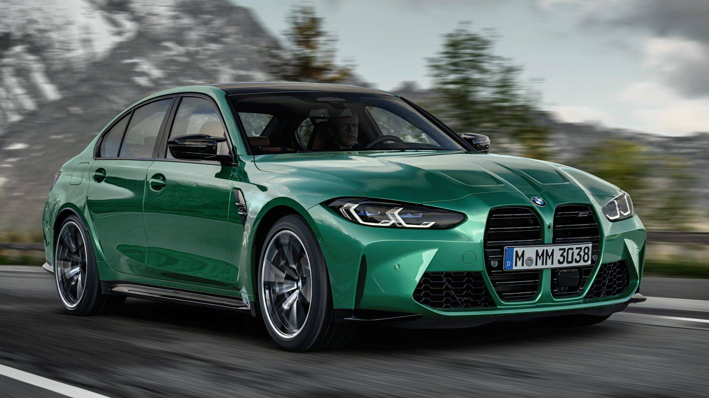

Jaguar F-Type 2021
Informações
O F-Type, produzido na fábrica da
Jaguar em Castle Bromwich, no
Reino Unido, contará com duas
configurações no mercado nacional,
conversível e coupé, com versões
R-Dynamic P300 e P380.
Debaixo do capô, o modelo P300 conta
com motor turbo de quatro cilindros,
2.0, capaz de produzir 300 cv e 40,8
mkgf de torque a partir de 1.500 rpm.
O propulsor é acoplado ao câmbio
automático Quickshift de oito marchas,
desenvolvido com base na edição limitada
Jaguar XE SV Project 8.
- Coupé R-Dynamic R$ 404.166
- Conversível R-Dynamic R$ 418.082
-
Configurações R-Dynamic P380
a partir de R$ 537.351
Golf GTI Oettinger

Informações
Ele é uma das criações mais famosas da
Oettinger Sportsystems GmbH.Fundada
em 1951, ela se notabilizou por projetos
como o Fusca Okrasa, que era equipado
com novos cabeçotes e carburadores do
Porsche...
O GTI da Oettinger atingia entre 235 a
330 cv; este permitia 0-100 em 5,8 s e
máxima de 270 km/h. O veículo da foto
tem pacote aerodinâmico formado por
spoilers dianteiro e traseiro, aerofólio
traseiro e saias laterais (R$ 13.500),
sistema de escape com quatro saídas
traseiras e difusor (R$ 12.900) e rodas
exclusivas de liga de 19 polegadas com
pneus inclusos (R$ 23.900).
- Preço do carro sem modificação:
R$ 687,990 - Preço total: R$ 756.190
BMW M3
Informações
ano de 2021 também terá o M3, a deriva
ção mais braba e legal da nova geração
do Série 3. O modelo, preparado pela
divisão esportiva da BMW, usa um motor
3.0 de seis cilindros em linha, biturbo,
com 517 cv e 66,3 kgfm de torque, aliado
a um câmbio automático de oito marchas
com três programações diferentes.
A força, claro, vai para as rodas traseiras,
mas lá fora há tração integral opcional.
O conjunto mecânico é o mesmo do M4,
a variante cupê do Série 3. Os dois mo-
-delos chegarão ao mercado brasileiro
no fim de 2021. O desenho é que
promete ser um tema controverso.
Os puristas reclamaram da frente com
capô e grade “bicudos”, e dos faróis mais
espichados. Eu só não vou comprar
por causa disso…
- Preço:R$757.950